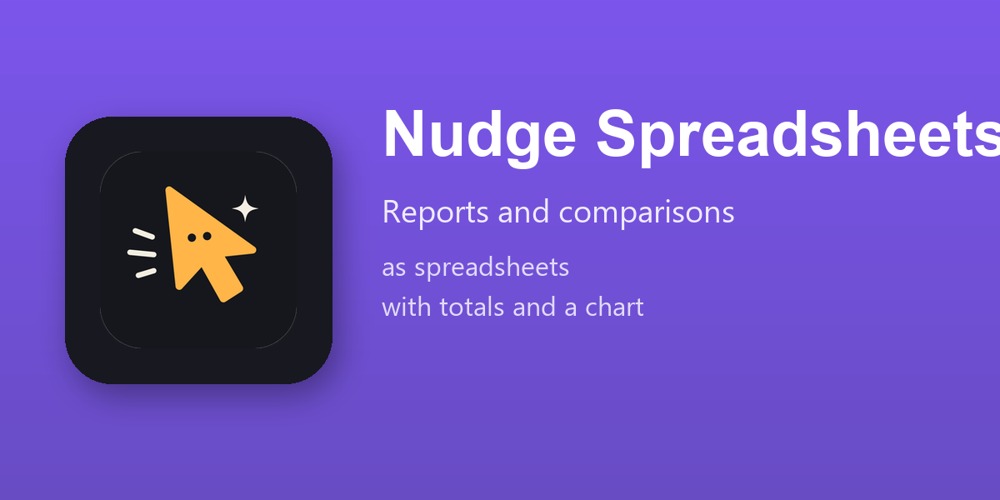

The figures are read with your rights: what you cannot open is not in the sheet.
Installed by itself where Nudge and the Spreadsheet module of Odoo are both there, Community and Enterprise. With the Documents app, Nudge Spreadsheets in Documents keeps the sheets in Documents, with its editor, its versions and its sharing.